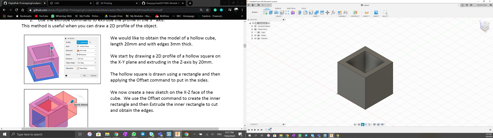
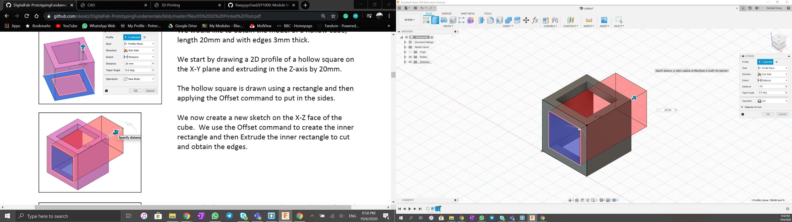
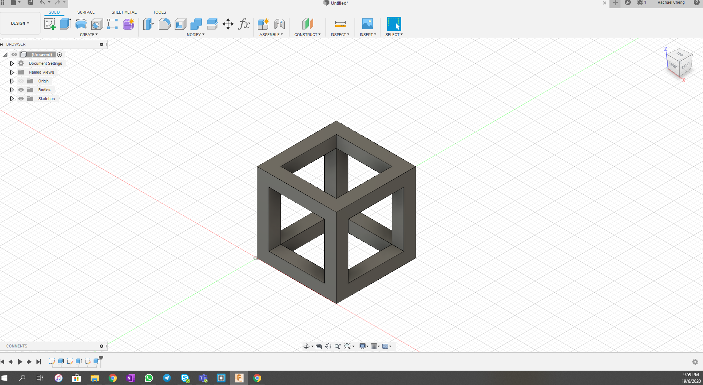
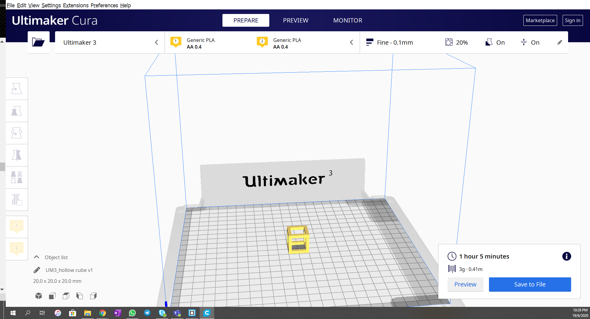
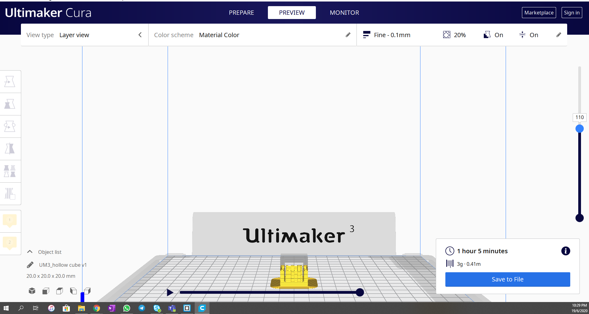

3D Printing Process
3D Printing TutorialThere are 3 main steps for 3D printing.
- CAD 3D Model (STL)
- Slicer for 3D print (.gcode)
- 3D Print
The CAD model can be done using Fusion360. Once designed, save the file as a STL (Standard Tessellation Language)file which is used for representation of 3D objects
The Slicer software that I am using is Cura. The slicer software slices the 3D model into layers for printing and allows us to configure how we would be able to print the object.
Creating a 3D model using Extrusion
Following the tutorial "Introduction to 3D Printing", I perpared a 3D drawing of a hollow cube using mainly the extrustion function on Fusion360.
  Using Slicer software (Ultimaker)
Once the 3D model is completed, ensure that the file is converted into STL. The general workflow of the printing process is
- Load the STL file
- Set the parameter (layer height; wall thickness; fill density; speed of print; supports;bad adhesion)
- Slice the object using the set parameters and generate the 3D printer code
- Save the code on a thumbdrive and use it to print the object
Using the Hollow Cube Model I drew, I ran it through the slicer software. THe cube was 20mm by 20mm, requirred support for the top part as the angle was too steep as a suspension. Overall it took 3g of PLA and about 1 hour to print.
 